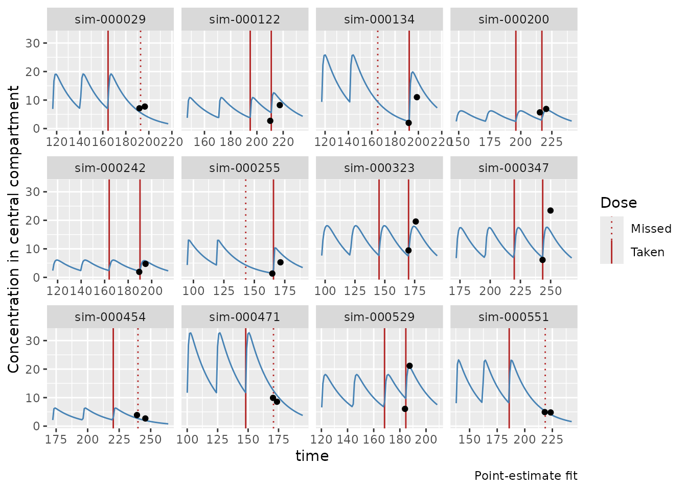
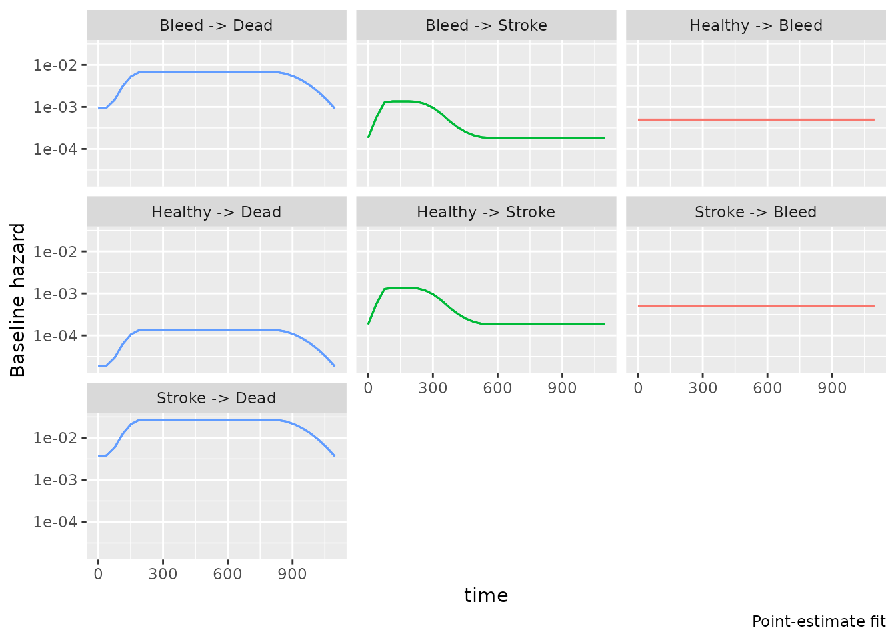
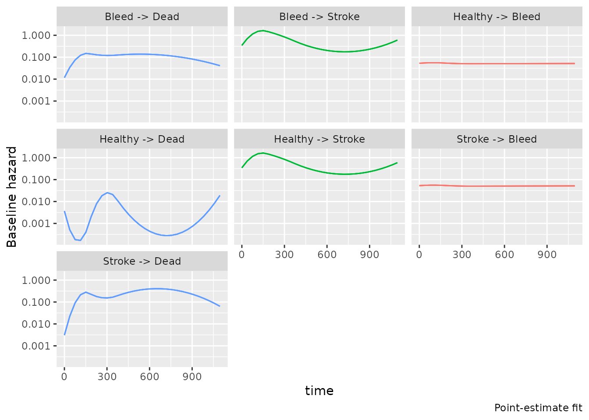
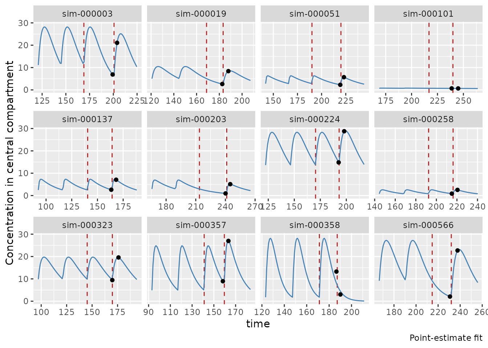

Exposure-hazard multistate modeling with bmstate
Juho Timonen
20th Nov 2025
exposure-hazard.RmdThis vignette is work in progress.
Data simulation
Setup
library(bmstate)
#> Attached bmstate 0.3.3. Type ?bmstate to get started.
library(dplyr)
#>
#> Attaching package: 'dplyr'
#> The following objects are masked from 'package:stats':
#>
#> filter, lag
#> The following objects are masked from 'package:base':
#>
#> intersect, setdiff, setequal, union
library(tidyr)
library(tibble)
library(ggplot2)True data-generating model
# True beta
create_true_covariate_effects <- function(mod) {
NTT <- mod$system$num_states() - 1
C <- length(mod$covs())
bh_true <- matrix(0, NTT, C)
bh_true[1, 2] <- 1
bh_true[2, 2] <- -1
bh_true[3, 1] <- 0.3
sn <- event_state_names(mod)
rownames(bh_true) <- paste0("Effect on ", sn)
colnames(bh_true) <- mod$covs()
df <- data.frame(bh_true) |>
rownames_to_column("event") |>
pivot_longer(cols = -event, names_to = "covariate", values_to = "beta")
beta_pk <- list(CL = c(0.3, -0.3), V2 = c(0.3))
list(df = df, matrix = bh_true, pk = beta_pk)
}
# True baseline hazard parameters
create_true_baseline_hazard <- function(mod) {
tm <- mod$system$tm()
# Spline weights
w_true <- matrix(0, 7, 9)
for (j in 1:7) {
ww <- rep(0, 9)
if (tm$trans_df()$trans_type[j] == 2) {
ww <- rep(-1, 9)
ww[3:5] <- 1
}
if (tm$trans_df()$trans_type[j] == 3) {
ww <- rep(-1, 9)
ww[4:8] <- 1
}
w_true[j, ] <- ww
}
# Intercept
w0_true <- 0.5 * 1e-3
w0_true_vec <- rep(w0_true, 7)
w0_true_vec[3] <- 0.1 * w0_true
w0_true_vec[5] <- 5 * w0_true
w0_true_vec[7] <- 20 * w0_true
# Return
list(w0 = w0_true_vec, w = w_true)
}
# True data-generating model
create_true_model <- function() {
# Create models
sn <- c("Healthy", "Bleed", "Stroke", "Dead")
tm <- transmat_diamond(state_names = sn)
t3yr <- 3 * 365.25
haz_covs <- c("age")
pk_covs <- list(
CL = c("CrCL", "age"), V2 = "weight"
)
create_msm(
tm,
hazard_covs = haz_covs, pk_covs = pk_covs, num_knots = 8, t_max = t3yr
)
}
# Create oracle fit draws
create_oracle_fit <- function(similar_fit, beta_true, h0_true) {
checkmate::assert_true(similar_fit$is_point_estimate())
weights <- similar_fit$get_draws("weights")
weights[1, , ] <- h0_true$w
log_w0 <- similar_fit$get_draws("log_w0")
log_w0[1, ] <- log(h0_true$w0)
beta_oth <- similar_fit$get_draws("beta_oth")
beta_oth[1, , ] <- t(beta_true$matrix[, 1])
beta_oth <- posterior::rvar(beta_oth)
beta_xpsr <- similar_fit$get_draws("beta_xpsr")
beta_xpsr[1, , ] <- t(beta_true$matrix[, 2])
lp <- similar_fit$get_draws("lp__")
lp[] <- NA
log_z_pk <- similar_fit$get_draws("log_z_pk")
log_z_pk[, , ] <- 0
log_sig_pk <- similar_fit$get_draws("log_sig_pk")
log_sig_pk[, ] <- 0
log_mu_pk <- similar_fit$get_draws("log_mu_pk")
log_mu_pk[, ] <- 0
sigma_pk <- similar_fit$get_draws("sigma_pk")
sigma_pk[] <- 0.3
beta_CL <- similar_fit$get_draws("beta_CL")
beta_CL[1, ] <- beta_true$pk$CL
beta_V2 <- similar_fit$get_draws("beta_V2")
beta_V2[1, ] <- beta_true$pk$V2
# Create fit
draws <- list(
beta_oth = beta_oth,
beta_xpsr = beta_xpsr,
beta_CL = beta_CL,
beta_V2 = beta_V2,
weights = weights,
log_z_pk = log_z_pk,
log_sig_pk = log_sig_pk,
log_mu_pk = log_mu_pk,
sigma_pk = sigma_pk,
log_w0 = log_w0,
lp__ = lp
)
sd <- similar_fit$get_data()
mod <- similar_fit$model
MultistateModelFit$new(similar_fit$data, sd, mod, draws,
info = "Oracle fit"
)
}Data simulation
mod_true <- create_true_model()
beta_true <- create_true_covariate_effects(mod_true)
h0_true <- create_true_baseline_hazard(mod_true)
simdat <- mod_true$simulate_data(
params$N_subject,
beta_haz = beta_true$matrix,
beta_pk = beta_true$pk,
w0 = h0_true$w0,
w = h0_true$w
)
#> Recompiling Stan model
#> Using stan file at /home/runner/work/_temp/Library/bmstate/stan/msm.stan
#> Generating 600 paths
covs_dh <- unique(c(mod_true$data_covs(), "dose_amt"))
simdat_dh <- simdat$paths$subset_covariates(covs_dh, renamed_old = "dose", renamed_new = "dose_amt")
simdat_death <- as_single_event(simdat_dh, "Dead", null_state = "Healthy")
sa <- simdat$paths$subject_df$xpsr
mod_true$set_xpsr_normalizers(loc = mean(sa), scale = stats::sd(sa))
#> setting xpsr normalizers to loc = 5.34993, scale = 0.69161
simdat <- mod_true$simulate_data(
params$N_subject,
beta_haz = beta_true$matrix,
beta_pk = beta_true$pk,
w0 = h0_true$w0,
w = h0_true$w
)
#> Generating 600 paths
print(simdat)
#> A JointData object:
#> PathData object with 600 paths
#> * States = {Healthy, Bleed, Stroke, Dead}
#> * Covariates = {age, CrCL, weight, dose, t_pre, t_post, conc_pre, conc_post, xpsr, ka, CL, V2, pk_lloq}
#>
#> A DosingData object with 600 subjectsModeling
Defining models
NK <- 4
tm <- mod_true$system$tm()
pk_covs <- list(
ka = mod_true$pk_model$ka_covs(),
CL = mod_true$pk_model$CL_covs(),
V2 = mod_true$pk_model$V2_covs()
)
# Exposure-hazard multistate model
mod_ms_eh <- create_msm(
tm,
hazard_covs = setdiff(mod_true$covs(), "xpsr"),
pk_covs = pk_covs,
num_knots = NK, t_max = mod_true$get_tmax()
)
# Dose-hazard multistate model
mod_ms_dh <- create_msm(
tm,
hazard_covs = covs_dh, num_knots = NK, t_max = mod_true$get_tmax()
)
# Survival model
tm0 <- transmat_survival(tm$states[c(1, 4)])
mod_death <- create_msm(
tm0,
hazard_covs = covs_dh, num_knots = NK, t_max = mod_true$get_tmax()
)
# Inference model knots
t3yr <- mod_true$get_tmax()
tt1 <- simdat$paths$transition_times()
tt2 <- simdat_dh$transition_times()
tt3 <- simdat_death$transition_times()
mod_ms_eh$set_knots(t3yr, tt1, NK)
mod_ms_dh$set_knots(t3yr, tt2, NK)
mod_death$set_knots(t3yr, tt3, NK)
# Oracle fit
fit_prelim <- fit_stan(mod_true, simdat, method = "optimize", init = 0, iter = 100)
#> Shortest time interval (0.100000000000023) is smaller than delta_grid (1.09575). Consider increasing n_grid or decreasing t_max of the model.
#> Using stan file at /home/runner/work/_temp/Library/bmstate/stan/msm.stan
#> setting xpsr normalizers to loc = 5.42315, scale = 0.56671
#> setting max conc = 9565.56038
#> Initial log joint probability = -899042
#> Iter log prob ||dx|| ||grad|| alpha alpha0 # evals Notes
#> 99 -9793.73 0.045901 1148.39 0.8822 0.8822 120
#> Iter log prob ||dx|| ||grad|| alpha alpha0 # evals Notes
#> 100 -9788.14 0.016727 786.414 1 1 121
#> Optimization terminated normally:
#> Maximum number of iterations hit, may not be at an optima
#> Finished in 0.8 seconds.
#> If these don't roughly match, consider refitting after setting xpsr normalizer loc and scale closer to estimated mean and sd. Otherwise interpret baseline hazards and xpsr effect size accodingly.
#> - xpsr normalization loc = 5.42315, mean estimated xpsr = 5.43736
#> - xpsr normalization scale = 0.56671, estimated xpsr sd = 0.70956
fit_true <- create_oracle_fit(fit_prelim, beta_true, h0_true)
fit_true$covariate_effects()
#> covariate beta target_state_idx target_state
#> 1 age 0.0 ± NA 2 Bleed
#> 2 age 0.0 ± NA 3 Stroke
#> 3 age 0.3 ± NA 4 Dead
#> 4 xpsr 1.0 ± NA 2 Bleed
#> 5 xpsr -1.0 ± NA 3 Stroke
#> 6 xpsr 0.0 ± NA 4 Dead
fit_true$plot_pk()
#> PK simulation
fit_true$plot_h0()
Fitting various models
fit_ms_eh <- fit_stan(mod_ms_eh, simdat, method = "optimize", init = 0)
#> Shortest time interval (0.100000000000023) is smaller than delta_grid (1.09575). Consider increasing n_grid or decreasing t_max of the model.
#> Using stan file at /home/runner/work/_temp/Library/bmstate/stan/msm.stan
#> setting xpsr normalizers to loc = 5.42315, scale = 0.56671
#> setting max conc = 9565.56038
#> Initial log joint probability = -898892
#> Iter log prob ||dx|| ||grad|| alpha alpha0 # evals Notes
#> 99 -9603.42 0.203959 2084.08 0.5976 0.5976 119
#> Iter log prob ||dx|| ||grad|| alpha alpha0 # evals Notes
#> 199 -8892.36 0.0260811 593.149 1 1 229
#> Iter log prob ||dx|| ||grad|| alpha alpha0 # evals Notes
#> 299 -8465.04 0.036666 1078.48 1 1 343
#> Iter log prob ||dx|| ||grad|| alpha alpha0 # evals Notes
#> 399 -8165.9 0.0183767 738.692 1 1 455
#> Iter log prob ||dx|| ||grad|| alpha alpha0 # evals Notes
#> 499 -8008.91 0.00355821 746.45 0.6648 0.6648 565
#> Iter log prob ||dx|| ||grad|| alpha alpha0 # evals Notes
#> 599 -7882.82 0.00308223 1094.79 1 1 669
#> Iter log prob ||dx|| ||grad|| alpha alpha0 # evals Notes
#> 699 -7788.76 0.00210207 1873.5 0.621 0.621 783
#> Iter log prob ||dx|| ||grad|| alpha alpha0 # evals Notes
#> 799 -7736.08 0.0359836 755.961 1 1 897
#> Iter log prob ||dx|| ||grad|| alpha alpha0 # evals Notes
#> 899 -7660.32 0.0285034 808.329 1 1 1007
#> Iter log prob ||dx|| ||grad|| alpha alpha0 # evals Notes
#> 999 -7537.49 0.0111011 1177.28 1 1 1119
#> Iter log prob ||dx|| ||grad|| alpha alpha0 # evals Notes
#> 1099 -7482.9 0.0259127 1653.56 1 1 1230
#> Iter log prob ||dx|| ||grad|| alpha alpha0 # evals Notes
#> 1199 -7425.37 0.0235646 3312.85 0.2649 1 1344
#> Iter log prob ||dx|| ||grad|| alpha alpha0 # evals Notes
#> 1299 -7395.09 0.00192234 679.179 1 1 1453
#> Iter log prob ||dx|| ||grad|| alpha alpha0 # evals Notes
#> 1399 -7375.47 0.00329343 673.567 1 1 1569
#> Iter log prob ||dx|| ||grad|| alpha alpha0 # evals Notes
#> 1499 -7354.32 0.00937889 609.642 1 1 1678
#> Iter log prob ||dx|| ||grad|| alpha alpha0 # evals Notes
#> 1599 -7323.88 0.0372511 1122.04 1 1 1788
#> Iter log prob ||dx|| ||grad|| alpha alpha0 # evals Notes
#> 1699 -7262.78 0.00805707 1217.84 1 1 1900
#> Iter log prob ||dx|| ||grad|| alpha alpha0 # evals Notes
#> 1799 -7209.87 0.00826959 1215.84 1 1 2009
#> Iter log prob ||dx|| ||grad|| alpha alpha0 # evals Notes
#> 1899 -7181.51 0.000383597 406.75 1 1 2116
#> Iter log prob ||dx|| ||grad|| alpha alpha0 # evals Notes
#> 1999 -7172.3 0.0058379 454.649 1 1 2225
#> Iter log prob ||dx|| ||grad|| alpha alpha0 # evals Notes
#> 2000 -7172.23 0.00310466 394.594 1 1 2226
#> Optimization terminated normally:
#> Maximum number of iterations hit, may not be at an optima
#> Finished in 11.2 seconds.
#> If these don't roughly match, consider refitting after setting xpsr normalizer loc and scale closer to estimated mean and sd. Otherwise interpret baseline hazards and xpsr effect size accodingly.
#> - xpsr normalization loc = 5.42315, mean estimated xpsr = 5.51054
#> - xpsr normalization scale = 0.56671, estimated xpsr sd = 0.96017
fit_ms_dh <- fit_stan(mod_ms_dh, simdat_dh, method = "optimize", init = 0)
#> Shortest time interval (0.100000000000001) is smaller than delta_grid (1.09575). Consider increasing n_grid or decreasing t_max of the model.
#> Using stan file at /home/runner/work/_temp/Library/bmstate/stan/msm.stan
#> Initial log joint probability = -804054
#> Iter log prob ||dx|| ||grad|| alpha alpha0 # evals Notes
#> 99 -6390.86 0.342268 271.848 1 1 120
#> Iter log prob ||dx|| ||grad|| alpha alpha0 # evals Notes
#> 199 -6212.14 0.0121632 16.9001 0.6773 0.6773 229
#> Iter log prob ||dx|| ||grad|| alpha alpha0 # evals Notes
#> 299 -6205.79 0.0172344 10.0839 1 1 340
#> Iter log prob ||dx|| ||grad|| alpha alpha0 # evals Notes
#> 399 -6202.51 0.0100091 5.67042 1 1 449
#> Iter log prob ||dx|| ||grad|| alpha alpha0 # evals Notes
#> 499 -6198.78 0.0317216 15.1583 1 1 553
#> Iter log prob ||dx|| ||grad|| alpha alpha0 # evals Notes
#> 599 -6196.49 0.00352212 15.3331 0.1617 0.1617 658
#> Iter log prob ||dx|| ||grad|| alpha alpha0 # evals Notes
#> 699 -6195.72 0.00285264 2.6361 1 1 765
#> Iter log prob ||dx|| ||grad|| alpha alpha0 # evals Notes
#> 799 -6194.37 0.0135432 13.2688 1 1 874
#> Iter log prob ||dx|| ||grad|| alpha alpha0 # evals Notes
#> 899 -6193.72 0.00440669 3.78953 1 1 983
#> Iter log prob ||dx|| ||grad|| alpha alpha0 # evals Notes
#> 999 -6193.61 0.00951578 0.887477 1 1 1084
#> Iter log prob ||dx|| ||grad|| alpha alpha0 # evals Notes
#> 1099 -6192.3 0.0308932 8.71699 0.8685 0.8685 1204
#> Iter log prob ||dx|| ||grad|| alpha alpha0 # evals Notes
#> 1199 -6190.01 0.0363073 13.3343 0.344 0.344 1313
#> Iter log prob ||dx|| ||grad|| alpha alpha0 # evals Notes
#> 1299 -6189.68 0.0121206 3.91667 0.5025 1 1423
#> Iter log prob ||dx|| ||grad|| alpha alpha0 # evals Notes
#> 1399 -6189.42 0.00169055 0.66537 1 1 1532
#> Iter log prob ||dx|| ||grad|| alpha alpha0 # evals Notes
#> 1499 -6189.38 0.004892 1.28893 1 1 1637
#> Iter log prob ||dx|| ||grad|| alpha alpha0 # evals Notes
#> 1599 -6188.91 0.00174241 2.8089 0.9912 0.9912 1746
#> Iter log prob ||dx|| ||grad|| alpha alpha0 # evals Notes
#> 1699 -6188.79 0.000936889 1.3612 0.328 1 1860
#> Iter log prob ||dx|| ||grad|| alpha alpha0 # evals Notes
#> 1787 -6188.78 0.000992681 0.260354 0.8284 0.8284 1953
#> Optimization terminated normally:
#> Convergence detected: relative gradient magnitude is below tolerance
#> Finished in 5.7 seconds.
fit_death <- fit_stan(mod_death, simdat_death, method = "optimize", init = 0)
#> Using stan file at /home/runner/work/_temp/Library/bmstate/stan/msm.stan
#> Initial log joint probability = -281504
#> Iter log prob ||dx|| ||grad|| alpha alpha0 # evals Notes
#> 99 -3522.91 0.0929614 12.8081 1 1 133
#> Iter log prob ||dx|| ||grad|| alpha alpha0 # evals Notes
#> 175 -3522.57 0.00236701 0.0906536 1 1 224
#> Optimization terminated normally:
#> Convergence detected: relative gradient magnitude is below tolerance
#> Finished in 0.1 seconds.
fit_ms_eh$plot_h0()
fit_ms_eh$covariate_effects()
#> covariate beta target_state_idx target_state
#> 1 age 0.217 ± NA 2 Bleed
#> 2 age -0.133 ± NA 3 Stroke
#> 3 age 0.222 ± NA 4 Dead
#> 4 xpsr 0.156 ± NA 2 Bleed
#> 5 xpsr -0.436 ± NA 3 Stroke
#> 6 xpsr 0.026 ± NA 4 Dead
fit_ms_dh$covariate_effects()
#> covariate beta target_state_idx target_state
#> 1 age 0.707 ± NA 2 Bleed
#> 2 age -0.609 ± NA 3 Stroke
#> 3 age 0.272 ± NA 4 Dead
#> 4 CrCL -0.603 ± NA 2 Bleed
#> 5 CrCL 0.504 ± NA 3 Stroke
#> 6 CrCL 0.077 ± NA 4 Dead
#> 7 weight 0.085 ± NA 2 Bleed
#> 8 weight 0.027 ± NA 3 Stroke
#> 9 weight 0.028 ± NA 4 Dead
#> 10 dose_amt 1.026 ± NA 2 Bleed
#> 11 dose_amt -1.145 ± NA 3 Stroke
#> 12 dose_amt 0.052 ± NA 4 Dead
fit_death$covariate_effects()
#> covariate beta target_state_idx target_state
#> 1 age -0.104 ± NA 2 Dead
#> 2 CrCL 0.152 ± NA 2 Dead
#> 3 weight 0.042 ± NA 2 Dead
#> 4 dose_amt -0.181 ± NA 2 Dead
fit_ms_eh$plot_pk()
#> PK simulation